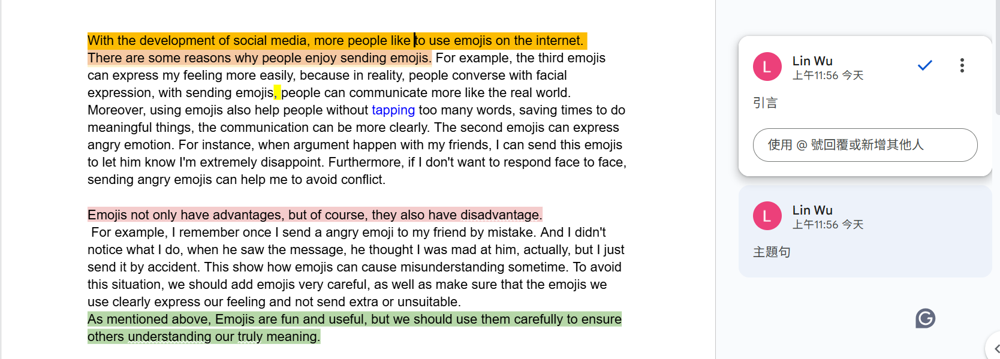

學生原文，已標示出引言(橘色)、主題句(淺紅色)與結論(綠色)。
本次批改依循官方評分標準，各項度的分數對應的表現如下表所示：
| 項目 | 優 (5-4分) | 可 (3分) | 差 (2-1分) | 劣 (0分) |
|---|---|---|---|---|
| 內容 | 主題(句)清楚切題，並具有具體、完整的相關細節支持。 | 主題尚稱清楚或突顯，部分相關細節敘述不全。 | 主題不明，大部分相關敘述不全或與主題無關。 | 文不對題或沒有寫，其他各項均以零分計算。 |
| 組織 | 重點分明，有頭有尾，發展、結尾、前後連貫，轉承語使用得當。 | 重點安排不妥，前後發展比例與轉承語使用欠妥。 | 重點不明、前後不連貫。 | 全文毫無組織或未按提示寫作。 |
| 文法、句構 | 全文幾無文法、格式、標點錯誤，文句結構富變化。 | 文法、格式、標點錯誤少，且未影響文意之表達。 | 文法、格式、標點錯誤多，且明顯影響文意之表達。 | 全文文法錯誤嚴重，導致文意不明。 |
| 字彙、拼字 | 用字精確、得宜，且幾無拼字、大小寫錯誤。 | 字詞單調、重複，用字偶有不當，少許拼字、大小寫錯誤，但不影響文意之表達。 | 用字、拼字、大小寫錯誤多，明顯影響文意之表達。 | 只寫出或抄襲與題意有關的零碎字詞。 |
評分標準：主題(句)清楚切題，並具有具體、完整的相關細節支持。
評分標準：重點分明，有頭有尾，發展、結尾、前後連貫，轉承語使用得當。
此部分錯誤雖不影響文意，但可透過下表對照，更清楚地看到問題所在：
| 原文錯誤 | 建議修正 | 說明 |
|---|---|---|
| ...saving times to do... | ...saving time to do... | time (時間) 在此為不可數名詞，不需加 s。 |
| ...when argument happen... | ...when an argument happens... | 主詞 an argument 是單數，動詞需用第三人稱單數 happens。 |
| I send a angry emoji... | I sent an angry emoji... | 1. 事情發生在過去，動詞用過去式 sent。2. angry 字首為母音，冠詞用 an。 |
| This show how emojis can... | This shows how emojis can... | 主詞 This 是第三人稱單數，動詞需加 s。 |
| ...add emojis very careful. | ...use emojis very carefully. | 1. use (使用) 比 add (增加) 更精確。2. 副詞 carefully 用來修飾動詞 use。 |
在用字遣詞上，有幾個地方可以更精進，讓文意更精確、表達更多元：
| 原文用字 | 建議修正 | 說明 |
|---|---|---|
| ...without tapping too many words... | ...without typing too many words... | tapping 指「輕點」，而 typing 才是「打字」。在文書輸入的情境下，typing 是更標準的用字。 |
| ...we should add emojis... | ...we should use / choose emojis... | add 的意思是「增加」，而 use (使用) 或 choose (選擇) 更能精確表達小心選用表情符號的語意。 |
| express my feeling (重複使用) |
convey my emotions communicate my feelings |
原文用詞正確但較單一。嘗試使用 convey (傳達)、communicate (溝通) 等不同動詞，能增加文章的豐富度。 |
現在你已經擁有很強的審題能力和組織架構能力了，這在寫作中是最重要的基礎。你已經知道題目要什麼，也知道如何把想法清晰地按照架構(漢堡法則)組織起來。 你未來的功課，是要打磨英文的文法字彙「精確性」。這包含了文法的正確使用與詞彙的豐富變化。
Frank's suggestion：知道你對建築充滿興趣，我想，寫作與建築之間，其實有著深刻的共鳴和相似。
從你寫的作文當中，我能看見你已經掌握了建築中最重要的事——「結構設計」。你的文章有著清晰的設計藍圖（切題的內容），和穩固的樑柱（流暢的組織）。這讓整篇文章能穩穩地站立，清楚地傳達它的目的。這是一切的基礎，也是最困難的部分，你做得非常出色。
接下來的功課，就像是建築的「內部裝修」與「外觀潤飾」。這就是文法與字彙的角色：
你的結構設計能力已經非常穩固。現在，就讓我們一起來當一個追求完美的工匠，仔細打磨每一塊磚、每一扇窗，讓你的下一篇文章，不僅結構穩固，更是一件充滿質感與美感的建築作品。